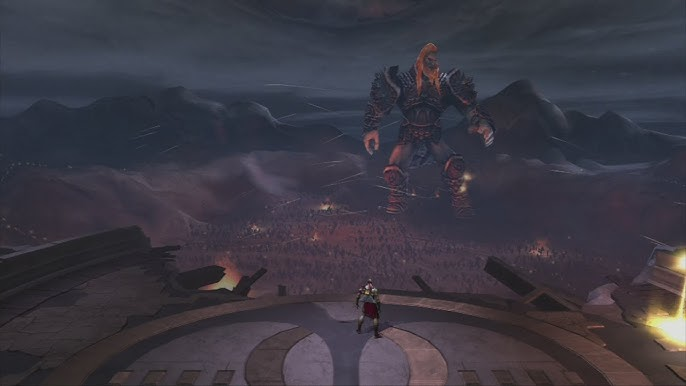
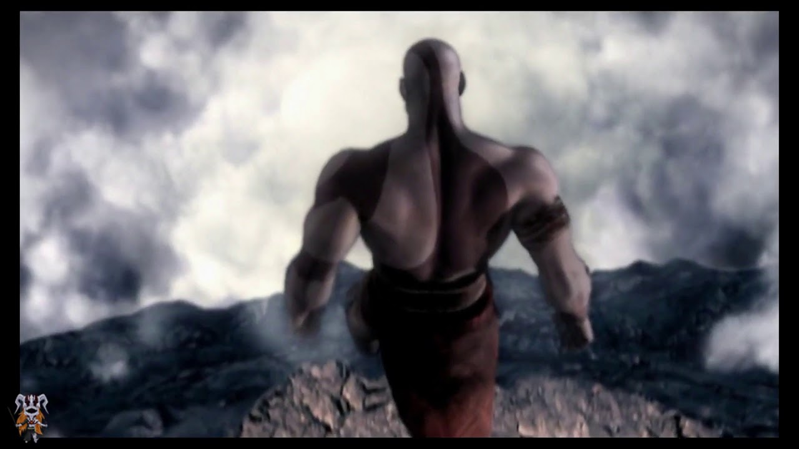

Tras 10 largos años, de servir fielmente a los Dioses del Olimpo como su campeón, haciendo tareas imposibles para un simple humano, como matar a la Hidra en el Mar Egeo por una orden de Poseidón. Todo ello por solo un trato: el olvido de las pesadillas que le atormentan.
Después de tantos años de obediencia, Kratos se comunica con Atenea y le reclama el perdón de sus pecados y el olvido de las pesadillas. Atenea le dice que antes tiene que hacer una tarea más: matar a Ares, ya que estaba destruyendo la ciudad de Atenas, y los dioses no lo podían detener, porque Zeus había dicho que no se debía pelear entre los dioses del Olimpo, es por eso que solo un mortal entrenado por un dios podría encargarse de la tarea de poder matarlo. Con el único propósito de encontrar la paz interna, se embarca en la aventura de matar a un dios, adentrándose en la ciudad de Atenas asediada por el dios, donde Kratos deberá buscar al Oráculo de Atenas para que pueda ayudarlo, mientras peleaba con los ejércitos de Ares.
El Oráculo de Atenas le dice que tiene que conseguir la Caja de Pandora. Esta caja lo haría muy poderoso y era la única forma de poder matarlo, de hecho era el arma más poderosa a la que un mortal podía acceder, pero estaba bien escondida para los mortales y no para los dioses. La caja está en el Templo de Pandora, atravesando el Desierto de las Almas Perdidas, en la espalda del gran titán Cronos. Dentro del Desierto de las Almas Perdidas, es donde Kratos se encuentra con otra estatua de Atenea, que le indica que siga el canto de las sirenas ya que lo guiarán hacia la caja. Una vez atravesado el desierto, Kratos toca un cuerno inmenso que le permite que el gran titán se acerque a donde está su posición para poder escalar hacia el templo de Pandora.
Kratos atraviesa el Desierto de las Almas Perdidas y encuentra un cuerno que al tocarlo, llamaría al titán Cronos quien en su espalda cargaba el enorme Templo de Pandora. Una vez encima del titán, tarda 3 días escalando y buscando algún costado por el que escalar, cuando finalmente encuentra un lugar por el cual llegar a tierra firme.
Por el camino va matando a muchos seres mágicos y míticos, como sirenas, minotauros, cíclopes y gorgonas; además de los múltiples rompecabezas que tiene que armar con el fin de encontrar y usar la Caja de Pandora.

Cuando al fin Kratos consigue la Caja de Pandora y la tiene en su poder, Ares, estando en la ciudad de Atenas viendo el gran logro del espartano, le lanza una columna de hormigón atravesándolo y matándolo, y en su lecho de muerte, las pesadillas y sus visiones terribles acerca del pasado que lo envuelve lo siguen acosando, con los recuerdos que él tenía sobre el cruel asesinato de su familia y el culpable de todo esto. Kratos muere, y desciende al Inframundo, donde antes de caer se pudo salvar gracias al hombre que se comió la Hidra y al que él había quitado su llave, haciéndolo para así poder encontrar la salida sorteando las dificultades a las que él ya está acostumbrado.
Cuando haya la salida, se encuentra saliendo de una tumba en Atenas, que días antes un misterioso ermitaño que había charlado con Kratos, había estado cavando. Este anciano desaparece, dejando a Kratos con dudas de la identidad de tal ermitaño. Es entonces cuando Kratos se dispone a entrar nuevamente al ahora destruido Templo del Oráculo, sabiendo que su batalla final se encontraba allí.
Kratos entra al templo y se dirige a la parte trasera de éste, que está al aire libre, donde anteriormente se encontraba una estatua enorme con una espada gigante haciendo de puente. Es allí donde se encuentra con el dios de la guerra, quien se encontraba hablándole al cielo, criticando a su padre Zeus, y reprochándole que si estaba viendo lo que su hijo podía hacer, lo poderoso que él era y ahora aún más, porque la Caja de Pandora ahora le pertenecía a él. Kratos le lanza un rayo a la cadena que sostenía la Caja de Pandora que Ares tenía en la mano, y se dispone a abrirla. Después de mil años, la caja finalmente fue abierta, y los poderes de los dioses se desataron. Kratos aumentó enormemente de tamaño, llegando a la altura de Ares. Después de una pequeña batalla reñida, Ares envía a Kratos a otra dimensión, diciéndole que él adoptaba muchas formas de matar a un hombre, pero que la mejor forma de matar a alguien era quebrantándole su espíritu, es por eso que Kratos cae en una plataforma en donde solo había un templo, el templo en el que años anteriores había matado a su familia. Kratos no entiende mucho, abre la puerta del templo y ve que dentro de el se encuentra su familia, siendo esto una ilusión, pero es allí donde ve que de las paredes empiezan a emerger clones de él. Se formaba así una paradoja en la cual Kratos tenía que matar a estos clones suyos, ya que estos querían matar a su familia, entonces, tenía que evitar lo que años anteriores el mismo había hecho.


Luego de una pelea difícil, donde los clones de Kratos crecen mucho numéricamente, Ares despoja a Kratos de sus espadas, arrancándoselas de sus brazos, y con ellas mata a su familia nuevamente. Ares hace volver a Kratos a Atenas, donde antes habían estado peleando, y ahora Kratos despojado de sus espadas y de toda esperanza solo espera el golpe final de su enemigo. Pero es allí donde ve la estatua con la espada dorada gigante que simulaba un puente, así que esquiva el golpe de su enemigo y arranca la espada de la estatua, plantándose así en una segunda pelea con el dios, dispuesto a aniquilarlo por lo que le hizo. Tras otra pelea con Ares, Kratos logra vencerlo, y Ares, derrumbado sobre el agua (ya que la lucha se desarrolla en el mar), le recuerda que fue él quien lo salvó de su muerte, pero él quería conseguir al guerrero ideal que no tuviera piedad, pero Kratos le dice que lo había conseguido, y lo atraviesa con la espada, matándolo sin piedad. Kratos había logrado lo imposible, que un mortal matara a un dios. Ahora, Ares ya no existía más.
Kratos, al haber cumplido el mandato de Atenea, siente que será redimido de sus sentimientos de culpa, pero cuando habla con ella, esta le dice que los dioses han llorado a su hermano caído y que le agradecen por realizar su tarea y los dioses lo perdonan pero no sería despojado de sus pesadillas que le atormentaban cuando mató a su familia ya que ningún hombre y ningún dios olvidaría los terribles hechos que él había cometido.
Al ver que su principal objetivo no se había alcanzado y que viviría con el remordimiento de no recuperar a su familia por el resto de sus días, Kratos no soporta la idea y decide lanzarse desde la cima de una montaña en cuyo precipicio le esperan unos riscos que seguramente acabaran con su vida, diciendo:
"Los dioses del Olimpo me han abandonado, ahora ya no hay ninguna esperanza"
pero al lanzarse y caer en el agua, es levitado por la diosa Atenea hasta la cima donde se lanzó, donde se encontraba una estatua de ella y una compuerta dorada misteriosa, y le dice que no era su momento de morir, y que los dioses no podrían dejar que alguien que ha hecho tales hazañas muera por mano propia.Como Ares había muerto, quedó una vacante entre los dioses y estos se la ofrecieron a Kratos ya que no existía un dios de la guerra.Es allí donde Atenea abre la compuerta dorada y revela su interior: la entrada lo llevaba al Monte Olimpo. La diosa le entrega las Espadas de Atenea, que se asemejan mucho a las Espadas del Caos, solo que estas son doradas, en vez de las otras que estaban forjadas de hierro. Kratos se dispone a entrar al Monte Olimpo, entrando a un salón donde al fondo lo espera el majestuoso trono donde por fin se sienta y descansa, sabiendo que no solo había logrado lo imposible, sino que también sabía que ahora era el nuevo Dios de la Guerra.